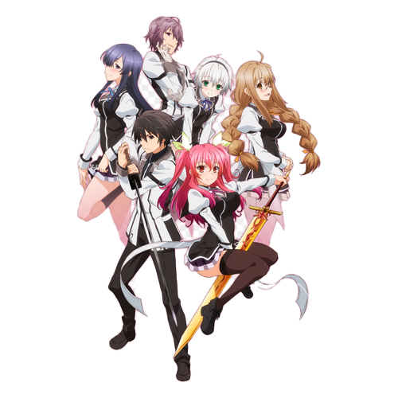
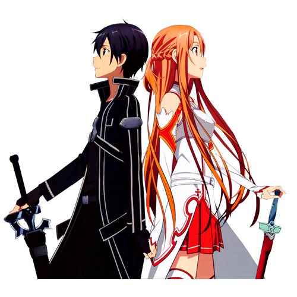

Rakudai Kishi no Cavalry
#001

Descrição
Rakudai Kishi no Cavalry (ou Chivalry of a Failed Knight em inglês) é um anime que nos leva para um mundo de magia e espadas, onde jovens talentosos se transformam em Cavaleiros Mágicos. A história gira em torno de Ikki Kurogane, um Cavaleiro considerado um fracasso, e sua jornada para se tornar mais forte ao lado da talentosa Stella Vermillion.
Sword Art Online
#002

Descrição
Sword Art Online (SAO) é um anime que nos transporta para um futuro próximo, onde a tecnologia da realidade virtual alcançou níveis inimagináveis. A história gira em torno de um jogo de RPG online extremamente popular chamado Sword Art Online, que promete uma imersão completa em um mundo fantástico.